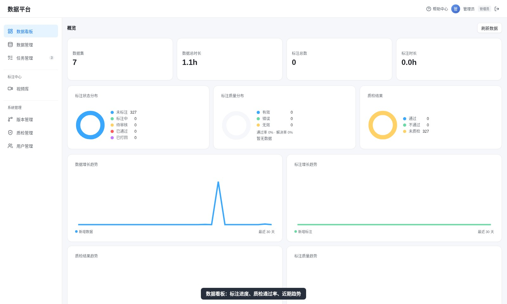
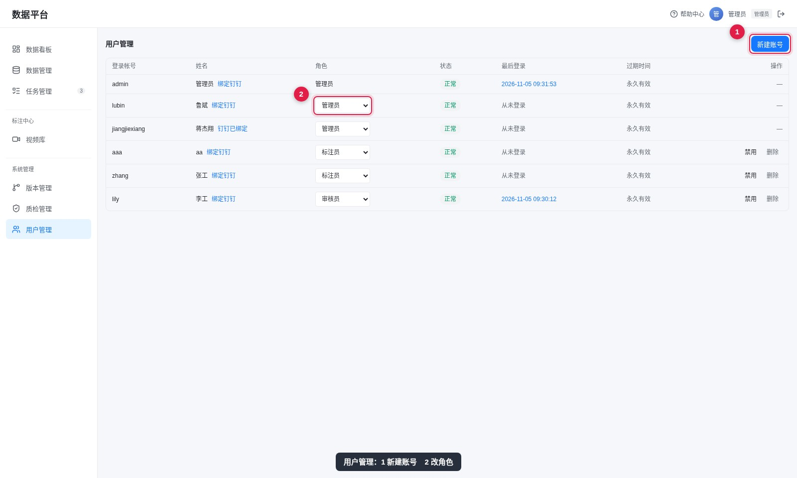
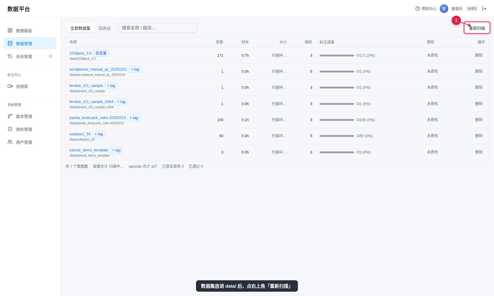

管理员
管理员的日常是管账号、导数据、建任务，以及在流程卡住时兜底。标注和审核也可以自己做。本页按这四个部分给出完整操作，每一步都配图。
登录账号 admin / admin123（新部署未改过密码时为 admin）。
能做什么
| 模块 | 能做的事 |
|---|---|
| 数据管理 | 查看全部数据集、重新扫描、移入回收站与恢复、改机器人标签 |
| 用户管理 | 新建账号、改角色、停用/删除、绑定钉钉、查看登录记录① |
| 任务管理 | 新建任务、取消、重试、编辑流程、转回节点、强制流转 |
| 标注 / 审核 | 打开任意任务的工作区，可编辑也可验收 |
① 界面目前提供新建账号和改角色；改密码、重置密码走接口或数据库，本页不展开。
管账号



别用管理员账号给团队分工。管理员能开任意任务，出问题时分不清责任：给标注的人开标注员账号，给验收的人开审核员账号。
导数据
data/ 后点右上角「重新扫描」；暂时不用的可以移到回收站，之后能恢复
数据集需要符合 LeRobot v2.x / v3.0 目录结构。扫描完成后，列表里能看到条数、时长、相机数和标注进度。

建任务


| 字段 | 只能选 |
|---|---|
| 标注负责人 | 标注员或管理员（选审核员会被拦下） |
| 审核负责人 | 审核员或管理员 |
要接着已有版本改，在「起始版本」里选对应版本；否则从原始数据开始。创建后任务自动跑完「预处理」，停在「人工标注」等人。
接手别人的任务


| 情况 | 做法 |
|---|---|
| 程序质检不通过、任务失败 | 任务详情页点「返回标注修正」（或「转回节点」），补完再提交 |
| 流程节点配错了 | 「编辑流程」调整后续节点；必要时「强制流转」，需填写原因，会记入执行事件 |
| 任务不用了 | 「取消任务」，工作区副本随之作废，原始数据不受影响 |
查看与发布结果


要自己标一遍的完整操作（划片段、写描述、SAM 生成目标框、保存）见标注员页。